الصورة تقود الانطباع
بشت الرياض وBouguessa يعرضان القصّة على عارض. TOTEME يثبت خلفيات صور المجموعة ويجمع الرجال والنساء تحت نظام واحد. لمُسدل: صورة كاملة تقارن القطع، ثم صورة قريبة تثبت الملمس والتشطيب.
لقطة 05 · لقطة 14 · لقطة 16
اتجاه مُسدل المقترح يجمع هدوء الفاشن الفاخر مع وضوح شراء البشت والعباية والثوب والفروة: صور تشرح القطعة، مقاس قريب، وخامة وموعد وسعر يمكن الاعتماد عليهم.
بشت الرياض وBouguessa يعرضان القصّة على عارض. TOTEME يثبت خلفيات صور المجموعة ويجمع الرجال والنساء تحت نظام واحد. لمُسدل: صورة كاملة تقارن القطع، ثم صورة قريبة تثبت الملمس والتشطيب.
لقطة 05 · لقطة 14 · لقطة 16بشتي يوضح درجات البشت؛ شين لاين يفصل التسليم الفوري والاستخدام اليومي. بريم يظهر عدد النتائج وفلاتر السعر. لمُسدل: تصنيف مختصر في الهيدر، وشرح فرق الدرجات وفلاتر مرتبطة ببيانات حقيقية.
لقطة 01 · لقطة 08 · لقطة 11بريم يضع الدليل بجانب المقاس، لكن صورته تصبح صغيرة على الهاتف. TOTEME يقدم طول العارض وجدول HTML. لمُسدل: الدليل قريب، وجدول مقروء خاص بالقطعة مع طريقة القياس.
لقطة 09 + الهاتف · لقطة 18 + الدليلالاستنتاج لمُسدل: الأرضية الفاتحة والمساحات المتزنة وتناسق التصوير تعطي الإحساس البريميوم. قيمة القطعة تُشرح بالخامة والتشطيب والقياس والخدمة. كثرة البانرات والنوافذ والعروض والأزرار المتنافسة تضعف ترتيب القرار.
هذه توصية مبنية على المراجعة البصرية وقاعدة المعرفة؛ لم نقس أثرها على مبيعات هذه المتاجر.
المرجع هو انسياب المعتمد واللام الأصلية بساق ممدودة، بنسختي بورغندي على أبيض وأبيض على بورغندي. نفس اللغة للرجال والنساء، مع صور متوازنة وأرضيات سادة للقطع.
#5C1E32#FCFBF8#DDDAD3#A77359#29282A#5D5C5Eالشعار والفافيكون والأنماط من حزمة SVG المعتمدة. بورغندي نبيذي واضح، أرضية فاتحة محايدة، والنحاسي محدود للتفاصيل. IBM Plex Sans Arabic للواجهة.
زر أساسي بورغندي بنص فاتح، ارتفاع 48px وزوايا 4px. ثانوي بحد بورغندي. حالات تركيز وتحميل وتعطيل وخطأ واضحة، وزر شراء أساسي واحد في موضع القرار.
flow أو edge في فاصل، weave في سياق تغليف، lam-repeat لتفصيل هوية محدود. لا نمط خلف معلومات المنتج. صور القطع الفعلية WebP/AVIF؛ SVG للهوية والرسومات.
المرجع السابق: هوية البراند والإمبلم · عمر ونورة · الحزمة المعتمدة
هذا ترتيب محتوى ووظائف، يُترجم لاحقًا إلى تصميم بصري متجاوب. يحافظ على خطة المنتج السابقة ويقرّب معلومات الاختيار والوقت من زر الشراء.
تعرفني بالعلامة وتوصلني إلى القطعة المناسبة.
شعار مُسدل SVG، رجال، نساء، هدايا؛ بحث واضح وسلة بعداد. على الهاتف قائمة قابلة للفتح وأسماء للأيقونات.
عنوان «حضور هادئ. وتفاصيل تليق بك.» مع صورة أو صورتين بحضور متوازن، وزر «تسوّق المجموعة». النص خارج الصورة وقابل للتغيير.
البشوت، الثياب والدشاديش، العبايات، الفروات؛ الهدايا مسار مستقل. لا نظهر فئة فارغة أو قطعة غير جاهزة للبيع.
4–8 قطع منتقاة ببطاقات واضحة؛ عنوان «اختياراتنا» بدل «الأكثر مبيعًا» حتى تتوفر مبيعات تثبت ذلك.
صورتان قريبتان للتشطيب والنسيج مع تفسير فرق القطع والدرجات بخصائص قابلة للإثبات.
صورة التعبئة الفعلية وما تشمل وسعرها وتجهيزها. Pattern خفيف في هذه الكتلة أو فاصل واحد.
فقرة مختصرة عن العلامة وروابط القياس والعناية والتوصيل والاستبدال والتواصل؛ تقييمات فقط إن كانت حقيقية.
تساعدني أقارن وأصفّي الاختيارات دون فقد مكان التصفح.
اسم المجموعة، سطر تعريف مختصر، فئات فرعية وعدد النتائج؛ الصور تبدأ مبكرًا دون بانر طويل.
3–4 أعمدة على الكمبيوتر وعمودان على الهاتف مبدئيًا؛ نسبة 3:4 ومساحة كافية للقطعة الكاملة، دون قطع الحافة أو القدمين.
اسم وصفي، السعر الحالي وتخفيض حقيقي إن وجد، اسم/عدد الألوان وحالة التوفر. اللمس يفتح المنتج؛ صورة إضافية لها تحكم ظاهر على الهاتف.
السعر، اللون، المقاس المتاح والتوفر؛ القصّة والخامة والبطانة عند وجود بيانات موحدة وإمكانات فعلية في سلة. لا فلتر علامة لمتجر علامة واحدة.
مقترحاتنا، الأحدث، السعر؛ الأفضل مبيعًا عندما توجد بيانات. Drawer على الهاتف مع تطبيق ومسح، وعدد النتائج وشرائح الاختيارات فوق الشبكة.
حفظ الفرز والفلاتر ومكان الرجوع من المنتج؛ حالة تحميل وخطأ وإعادة المحاولة، وحالة بلا نتائج تقترح إزالة فلتر.
قطعة واحدة بألوان متعددة في بطاقة واحدة عندما يطابقها نموذج سلة؛ اختلاف قصّة أو خامة أو سعر جوهري يبرر منتجًا مستقلًا.
تجاوب عن المقاس والقماش والقيمة والموعد قبل الإضافة.
مسار رجوع يحفظ المجموعة؛ أمام، خلف، جانب، قماش قريب، تشطيب/إغلاق، وحركة قصيرة للانسياب. أزرار معرض وتكبير واضحة.
اسم يصف نوع القطعة والقصّة واللون، استعمال مختصر، السعر والرسوم الإلزامية وحالة التوفر. 3 خصائص مثبتة قبل التفاصيل الطويلة.
اسم اللون مع صورته وتزامن المعرض والسعر والمخزون؛ أزرار مقاسات تُظهر النافد. لا اختيار افتراضي للمقاس.
رابط بجانب المقاسات، جدول HTML بالسم والإنش، طريقة القياس ورسم SVG، وطول العارض والمقاس المعروض؛ جدول مستقل لكل قصّة.
تغليف أو بطاقة أو اسم أو خبن اختياري دون تحديد مسبق؛ السعر والوقت وأثر التخصيص على الاستبدال قبل التأكيد.
جاهز أو يحتاج تجهيزًا، مدة تجهيز مؤكدة، تقدير توصيل وتكلفة حسب المنطقة حين تتوفر البيانات، وملخص الاستبدال قرب الزر.
زر أساسي بورغندي «أضف إلى السلة» مع ملخص الخيارات والتكلفة؛ تحقق واضح عند نقص المقاس وحالات جارٍ الإضافة ونجاح وفشل. شريط هاتف ثابت بعد خروج لوحة الشراء من الشاشة.
جدول القصّة والأبعاد وتركيب الألياف والبطانة والإغلاق والشفافية والعناية. «كريب» وحدها لا تثبت تركيب الألياف.
ضمان بصيغة ونطاق حقيقيين، أسئلة شائعة ومراجعات أصلية إن وجدت. بداية بلا تقييمات أفضل من رقم مختلق.
2–3 بدائل من نفس مهمة الشراء أو قطع إكمال واضحة، بعد معلومات القرار؛ لا شبكة عشوائية طويلة.
عمر: لماذا هذه الدرجة من البشت؟ هل القياس يناسبني؟ هل يصل قبل المناسبة؟ نورة: كيف تسقط العباية؟ هل تحتاج بطانة؟ ما الإغلاق والعناية؟
هما شخصيتان نوعيتان مركبتان من البحث السابق. الهدية مسار متاح لكليهما؛ لا نفترض أعمارًا أو دخولًا أو أرقام تحويل جديدة.
| الفئة | بيانات القرار المطلوبة |
|---|---|
| البشت | نوع النسيج وتركيب الألياف؛ سقوط البشت؛ درجة وخصائص الزري والتشطيب؛ قياسات القطعة ومقاس العارض؛ الخبن والاسم وتكلفتهما ومدتهما |
| العباية | القصّة والطول والعرض والكم؛ الإغلاق والبطانة؛ الشفافية من اختبار فعلي وظروفه؛ تركيب الألياف والعناية؛ هل تشمل الطرحة أو القطعة الداخلية |
| الثوب والدشداشة | تفريق القصّات بأسمائها؛ الطول والصدر والكتف والكم؛ الياقة والإغلاق والجيوب؛ تركيب الألياف والشفافية؛ جاهز أم تفصيل ومتطلبات القياس |
| الفروة | الخامة الخارجية والبطانة/الحشو؛ الأبعاد والإغلاق؛ الوزن وملاءمة الطقس بوصف مثبت؛ العناية والتخزين؛ مدة تجهيز فعلية |
افتح اسم المتجر لمشاهدة الرئيسية ثم المجموعة ثم المنتج. تقييم «أساس جيد» أو «يحتاج ضبطًا» يخص الحالة المفحوصة فقط. الصور لقطات متصفح أصلية بتاريخ البحث، وتظل محتويات المتاجر وحقوقها لأصحابها.
ما نستفيد منه: تصنيف درجات البشت وصور القطعة على عارض وخيارات الاسم والخبن.
كيف نكيّفه لمُسدل: شرح فرق الدرجات بالخامة والتشطيب؛ الاسم والسعر كنص حي، والقياس قريب من الاختيار.
درجات البشت واضحة كفئات مصورة؛ نص وأسعار داخل البانرات، وشريط كاش باك بارز. أيقونات الهيدر داكنة على أخضر داكن: خطر تباين مرئي.
الصفحة التي فُحصت ↗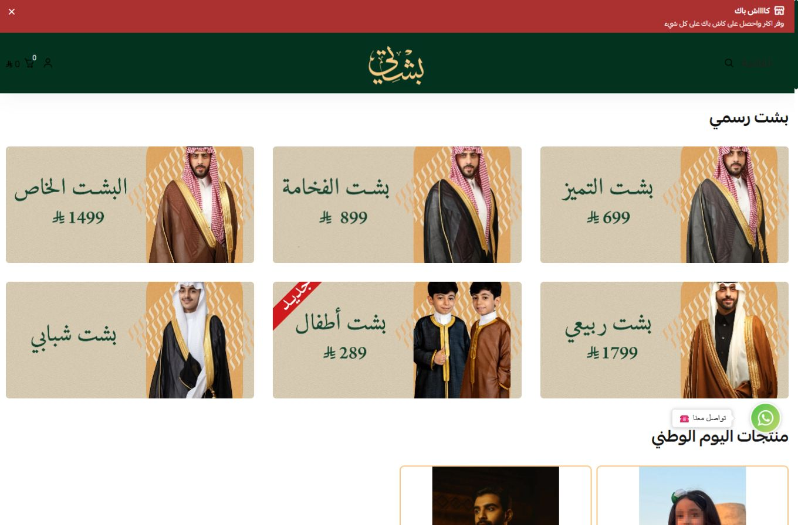
6 أعمدة على الكمبيوتر، صور على عارض، اسم وسعر وزر إضافة في كل بطاقة. فرز ظاهر؛ كثافة تقلل مساحة تفاصيل القماش. فلاتر المقاس والخامة غير ظاهرة في الشاشة المفحوصة.
الصفحة التي فُحصت ↗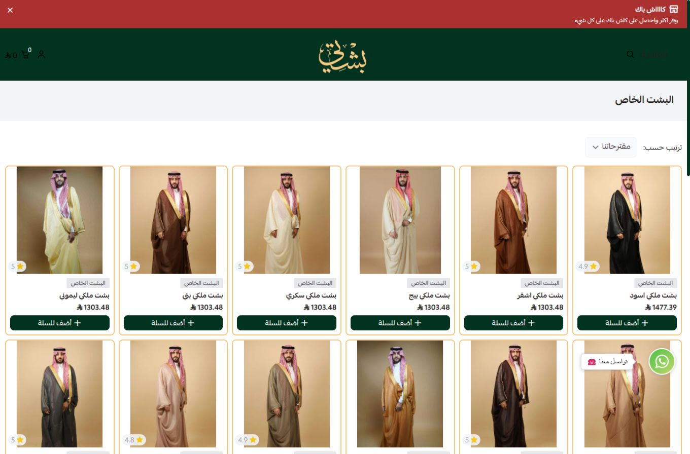
صورة كبيرة على عارض وأزرار مقاسات ظاهرة وخيارات الاسم والخبن؛ شريط شراء ثابت بثلاثة مسارات. وصف افتتاحي عام وبطاقات تقسيط تسبق المقاس. رابط قياس قريب من أزرار المقاس غير ظاهر في اللقطة؛ صفحة القياس متاحة بالفوتر. لم نختبر الدفع أو الضريبة.
الصفحة التي فُحصت ↗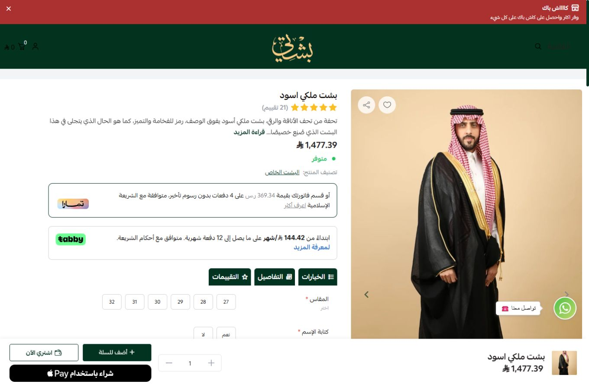
ما نستفيد منه: متجر يجمع الرجال والنساء، وتصوير أمامي واضح وتفاصيل للقصّة والإغلاق.
كيف نكيّفه لمُسدل: نقرب اختيار المقاس من السعر ونلخص خصائص القرار قبل الوصف المطول.
بحث واسع وتنقل رجال/نساء وصورة افتتاحية كبيرة؛ فئات شتوية وبشوت وعبايات ضمن متجر واحد. زر تسوق مباشر فوق الصورة غير ظاهر في الحالة الملتقطة. مساحة الصورة تفصل الهوية عن شبكة المنتجات.
الصفحة التي فُحصت ↗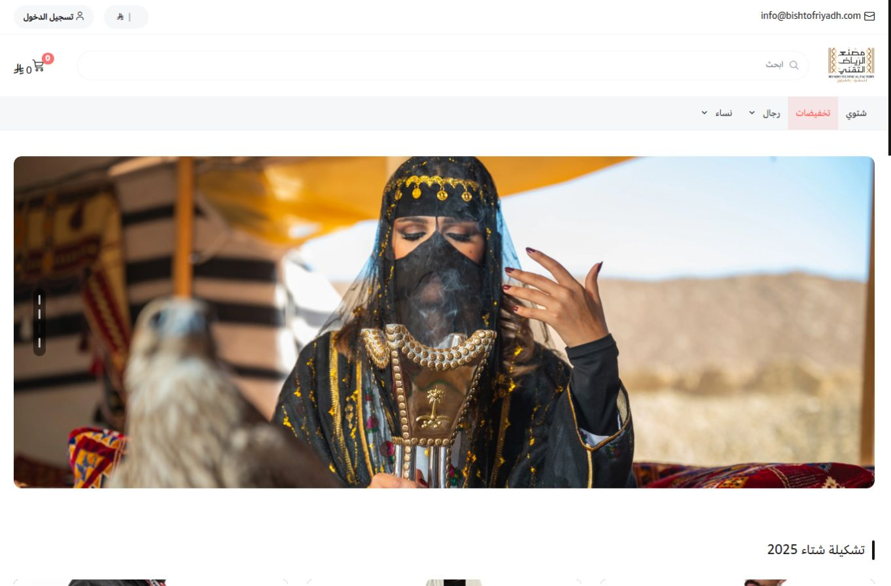
تصوير أمامي كامل وخلفيات بيضاء متجانسة؛ 5 أعمدة واسم يتضمن اللون وسعر مخفض. فرز ظاهر، دون فلاتر وظيفية ظاهرة في اللقطة. تكرار الموديل بألوان منفصلة يستدعي قرار تجميع الألوان لمُسدل.
الصفحة التي فُحصت ↗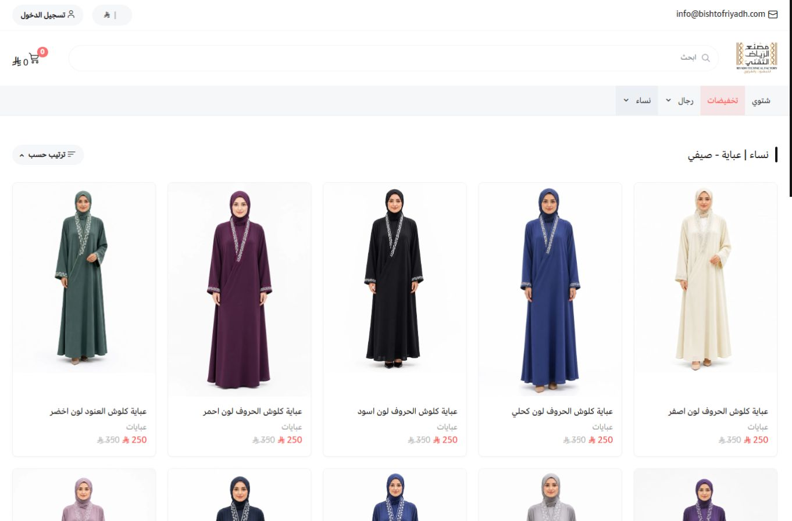
وصف يحدد القصّة والإغلاق والقماش واللون وصورة على عارضة؛ اختيار المقاس قائمة 52–60. المقاس وزر الإضافة يأتيان أسفل كتلة وصف وتقسيط. دليل القياس بالفوتر لا بجانب الاختيار. لا نعتمد تسمية كريب لإثبات تركيب الألياف.
الصفحة التي فُحصت ↗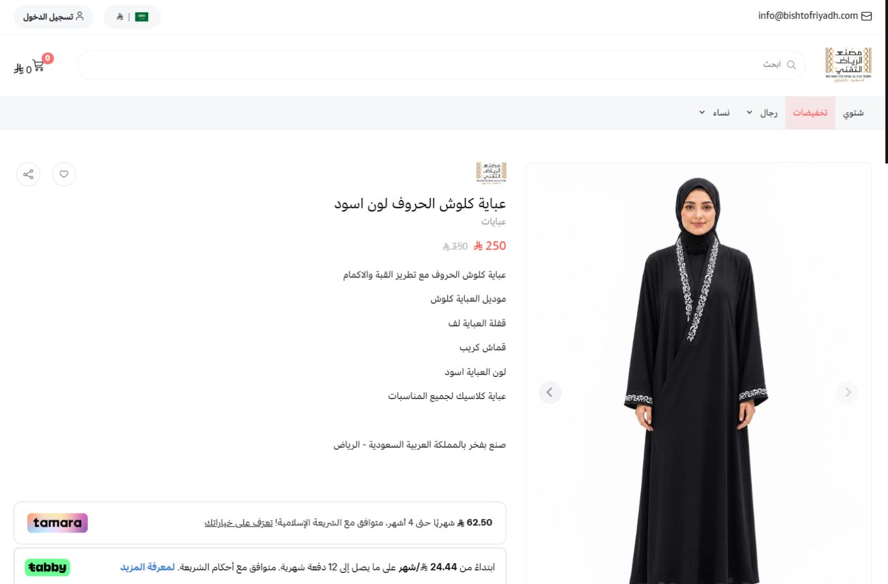
ما نستفيد منه: عدد النتائج وفلاتر السعر، ودليل قياس ملاصق لاختيار المقاس.
كيف نكيّفه لمُسدل: جدول قياس HTML مقروء على الهاتف، مع توحيد خلفيات الصور وقصّها.
تنقل واضح حسب المنتج، أرضية فاتحة وصورة افتتاحية كبيرة، ثم مجموعات ومحتوى هدايا. أسماء التصنيفات الصغيرة باللون الذهبي على فاتح تستدعي اختبار تباين؛ الشريط المتحرك للعروض بارز.
الصفحة التي فُحصت ↗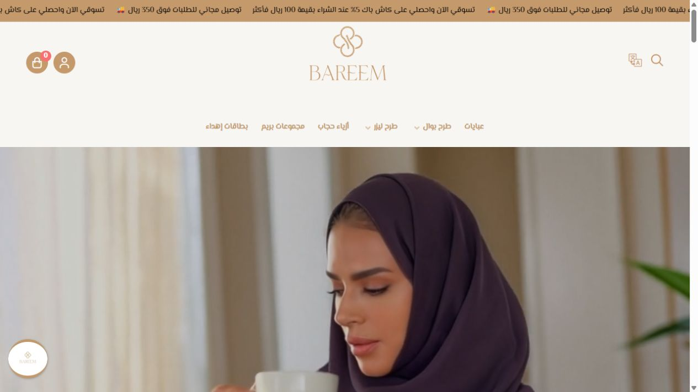
عدد النتائج وفلاتر سعر وفرز ظاهرة وثلاث صور كبيرة. صور البطاقات متفاوتة في الخلفية والقصّ، وبعض النصوص داخل الصور. نستفيد من بنية الفرز والفلاتر مع تصوير موحد لمُسدل.
الصفحة التي فُحصت ↗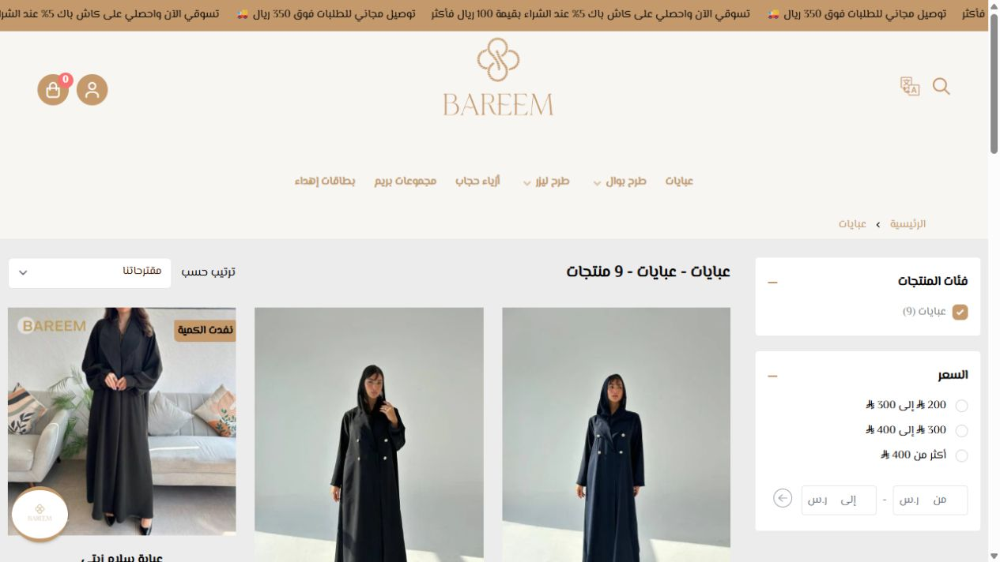
دليل قياس ملاصق لاختيار المقاس، فُتح فعليًا وفيه طول وعرض وكم بالسم والإنش. مقاس نافد مميز في القائمة، وخيار هدية. على390px تظهر صورة الجدول بنص صغير؛ لمُسدل نستخدم جدول HTML قابل للقراءة والتمرير. لم نختبر إضافة أو دفع.
الصفحة التي فُحصت ↗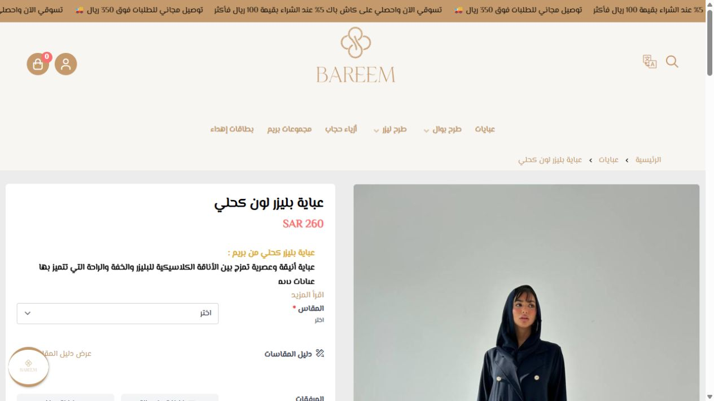
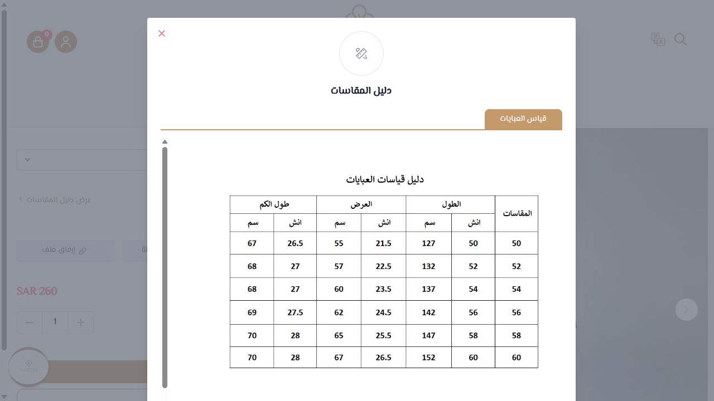
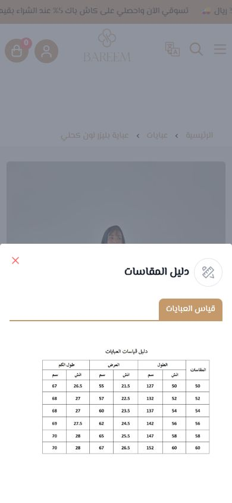
ما نستفيد منه: تصنيف حسب الاستعمال والخامة، وقسم التسليم الفوري وتمييز المقاس النافد.
كيف نكيّفه لمُسدل: نختصر الهيدر، ونثبت الخامة والقياسات ومدة التجهيز في المنتج.
تصنيفات دقيقة حسب الاستخدام والخامة مع قسم تسليم فوري؛ صفان طويلان في التنقل وشريط متحرك. ست صور افتتاحية تعرض تنوع القطع، لكن دعوة تسوق واحدة غير ظاهرة في اللقطة.
الصفحة التي فُحصت ↗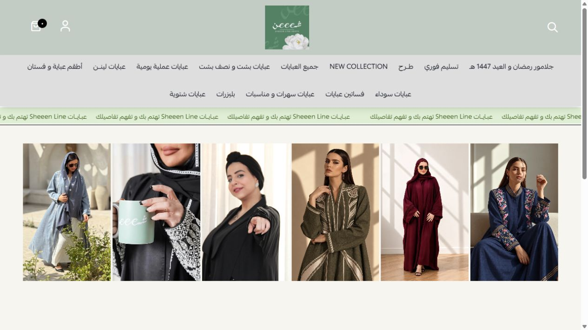
مجموعة التسليم الفوري تعرض 13 منتجًا وفرزًا وصورًا كبيرة بأربعة أعمدة. اختلاف الخلفيات وقص الصور؛ عنوان المجموعة في مسار التصفح بينما مكان العنوان الكبير يعرض العدد. زمن التسليم الفعلي لم يُتحقق.
الصفحة التي فُحصت ↗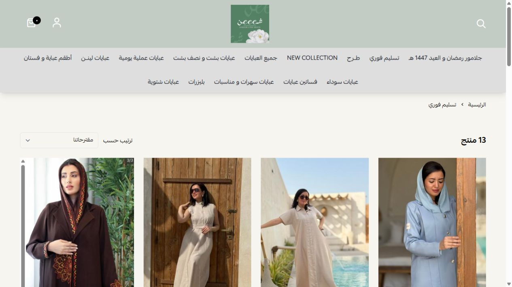
أزرار مقاس ظاهرة مع تمييز النافد وصورة كبيرة؛ تفاصيل الخامة والقياس والتجهيز غير ظاهرة في الصفحة وDOM المفحوصين لهذا المنتج. اسم شاعري منفرد لا يصف القصّة. يلزم إثبات الخصائص قبل اعتمادها لمُسدل.
الصفحة التي فُحصت ↗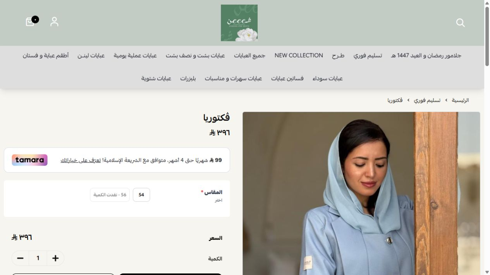
ما نستفيد منه: هدوء التصوير وثلاث صور كبيرة في المجموعة وفلاتر مرتبة.
كيف نكيّفه لمُسدل: نستفيد من التكوين، مع دعوة تسوق واضحة ودليل مقاس أقرب وتقدير شحن مبكر.
هيدر نحيف وتنقل مختصر وصورة افتتاحية تركز على القصّة والملمس، تليها قصة المجموعة ومنتجات مختارة وروابط Long Jackets والأتيليه. نأخذ هدوء التكوين ونضيف دعوة تسوق أوضح وظهورًا متوازنًا للرجال والنساء.
الصفحة التي فُحصت ↗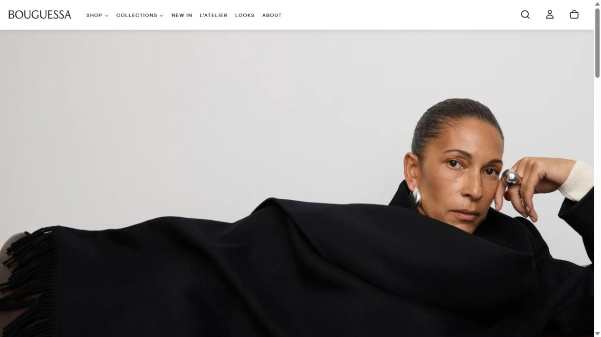
ثلاثة أعمدة كبيرة وخلفيات وقص صور متناسقة، عنوان وعدد وفرز دون بانر ضخم. فتحت درج الفلاتر: التوفر والسعر والمقاس وخيارات إضافية للخامة مع تطبيق ومسح. ظهرت نافذة اشتراك أثناء المراجعة وأغلقتها.
الصفحة التي فُحصت ↗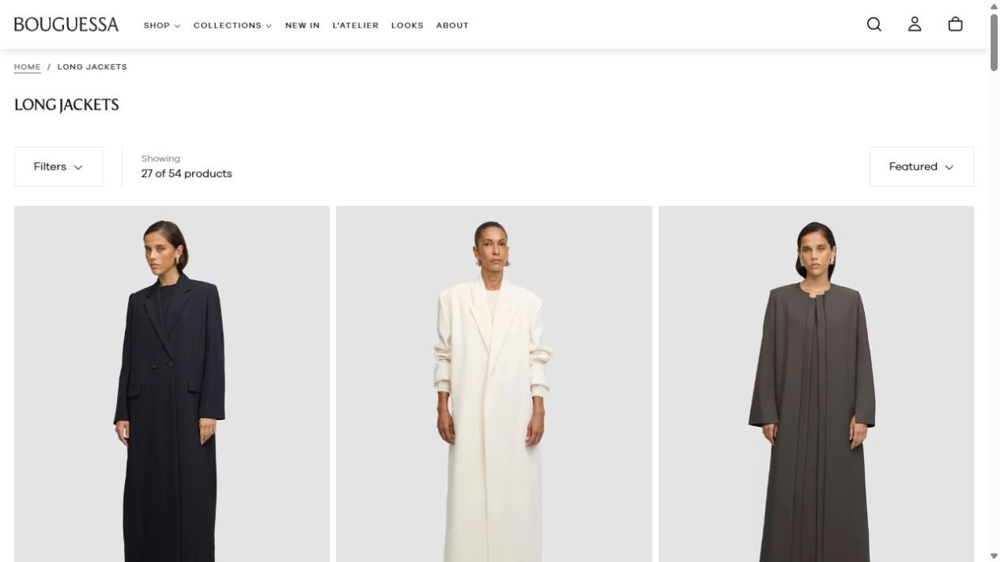
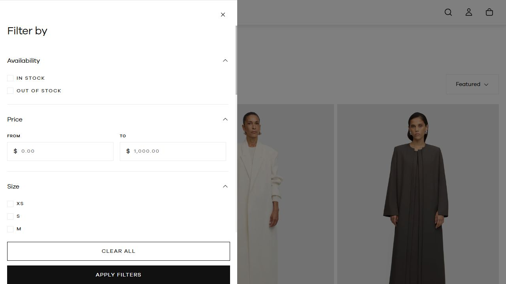
مقاسات بأزرار ولوحة شراء بسيطة؛ توضيح أثر تعديل الطول على موعد التسليم بجانب الشراء، ودرج تفاصيل مفتوح يصف القصّة والخامة. دليل المقاس موجود أسفل لوحة القرار. معرض الصور الكبير بقي فارغًا في جلسة المتصفح؛ لا نحكم على جودة صور هذه الصفحة. عبارة الشحن المحسوب لاحقًا أقل وضوحًا من تقدير التكلفة مبكرًا.
الصفحة التي فُحصت ↗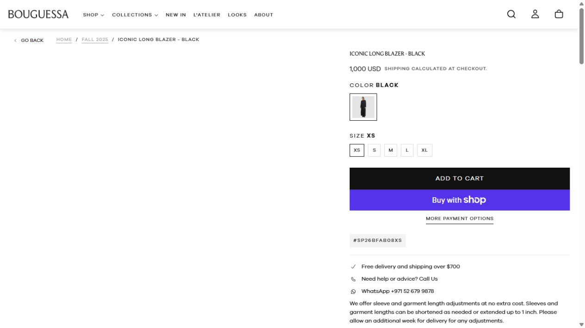
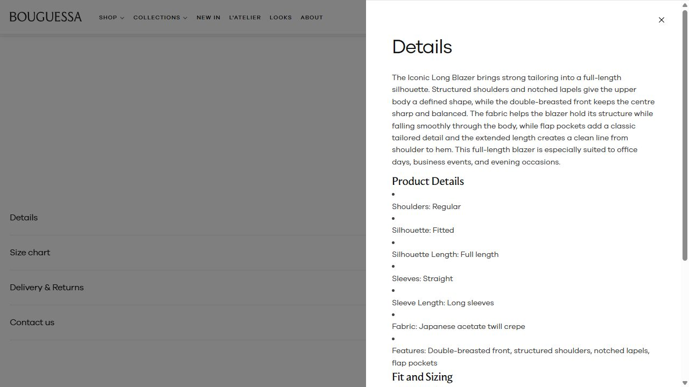
ما نستفيد منه: هوية مشتركة وتنقل مختصر، وصور ألوان ومقاس العارض وجدول HTML.
كيف نكيّفه لمُسدل: نوازن ظهور الرجال والنساء، ونضيف قياسات فعلية خاصة بالبشت والعباية والثوب والفروة.
تنقل Women وMen ضمن هوية واحدة؛ هيدر مختصر وشعار وسط ومساحة كبيرة حول صورة المجموعة الرجالية، ثم كتل للفئات النسائية. نأخذ وحدة النظام مع توازن الظهور، ونقلل المساحة الافتتاحية على الموبايل لتبقى دعوة التسوق واضحة.
الصفحة التي فُحصت ↗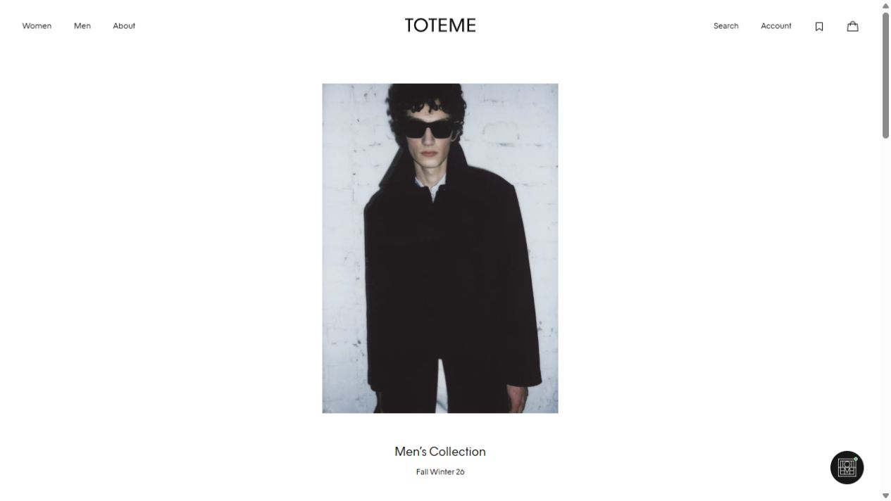
شبكة نظيفة بأربع قطع وخلفيات متناسقة، اسم وسعر تحت الصورة، تبديل كثافة 2/4/8 وفلاتر. عرض القطعة وحدها يفيد المقارنة؛ لمُسدل نضيف صورًا على عارض لفهم سقوط البشت والعباية ونحافظ على المقاسات واللون كتفاصيل عملية.
الصفحة التي فُحصت ↗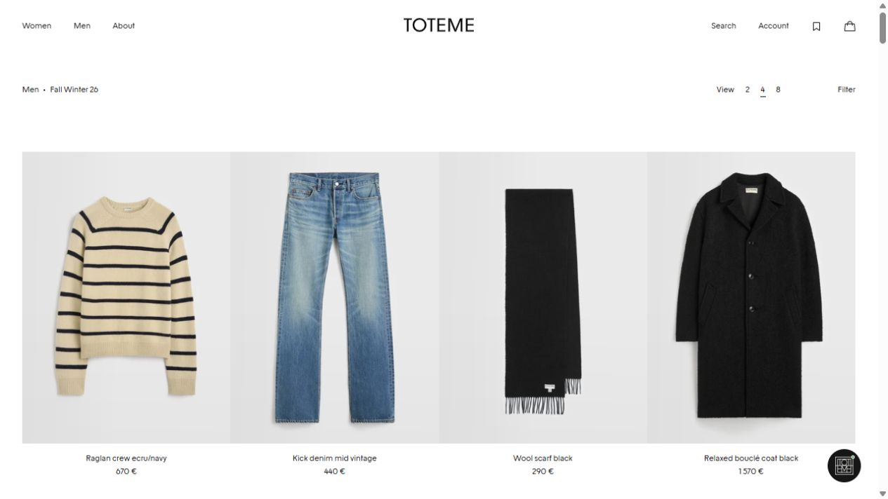
صورة أمامية كاملة على عارض، ألوان بصور، مقاسات واضحة وشرح مختصر للخامة. فُتح Size & Fit فعليًا: قصّة وطول العارض والمقاس الذي يرتديه وجدول HTML لتحويل المقاسات. لمُسدل نضيف قياسات القطعة الخاصة بكل فئة بدل الاعتماد على التحويل العام وحده. نافذة الاشتراك حجبت الوصول مؤقتًا وأغلقتها؛ لم نختبر الدفع.
الصفحة التي فُحصت ↗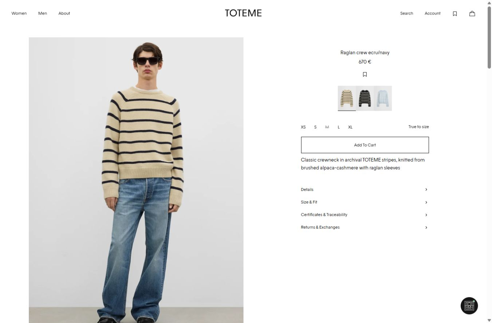
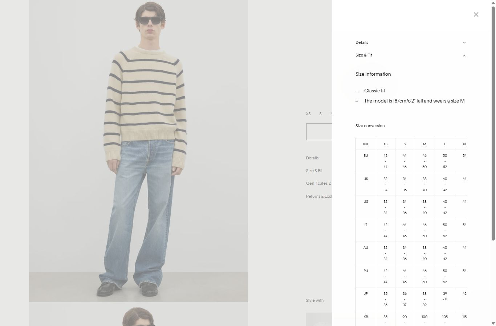
نبدأ بنموذج HTML/CSS/JavaScript قابل للمراجعة. ثم نكيّف مكوناته داخل ثيم Twilight باستخدام Twig ومكونات سلة وSDK، لتأتي الأسعار والمقاسات والمخزون والسلة من المنصة. النموذج المحلي وحده لا يكفي للبيع.
| الجزء | النموذج المقترح | قالب سلة الموثّق |
|---|---|---|
| الرئيسية | index.html + مكونات مستقلة | src/views/pages/index.twig |
| المجموعة والبحث | collection.html + فلاتر وفرز | src/views/pages/product/index.twig |
| المنتج | product.html + بيانات المتغيرات | src/views/pages/product/single.twig |
| السلة | واجهة ملخص تجريبية | src/views/pages/cart.twig |
| إدارة المحتوى | ملف بيانات المثال وdesign tokens | twilight.json ومكونات الرئيسية |
مسارات الصفحات الرسمية · مكونات الرئيسية · Twilight JS SDK
ما نتحقق منه في متجر سلة التجريبي: تركيب الثيم الخاص وحساب الشريك، والفلاتر الخاصة بالخامة، وتكاليف التخصيص وزمنه، وتقدير التوصيل حسب المدينة، وربط صور ومخزون المتغيرات. وجودها في متجر آخر لا يثبت أنها متاحة تلقائيًا في إعداداتنا.
نقيس رحلة مشاهدة المنتج ← اختيار المتغير ← السلة ← الشراء، مع الإرجاع وسببه. عدد النقرات وحده لا يثبت نجاح التصميم.
دليل مقاس ملاصق للاختيار، معلومات القياس والصور على عارض.
تجميع ألوان القطعة عند ملاءمة البيانات، فلاتر ذات صلة وملخص للفلاتر المطبقة.
إظهار تكلفة الشحن المتوقعة قرب قرار الشراء.
صور وفيديو ودليل مقاس وخيارات للقياسات؛ مرجع رسمي للقدرات، وليس دليلًا على أداء مُسدل.
تطوير ثيمات مخصصة باستخدام Twig وHTML وCSS وJavaScript.
قوالب الرئيسية والمجموعات والمنتج والسلة.
مكونات home وإعداداتها القابلة لإدارة التاجر.
إعدادات الثيم ومكوناته والمزامنة.
ربط واجهة الثيم بالسلة وأحداث المنصة.
معيار AA يتناول 24px مع شروط واستثناءات؛ هدف مُسدل المقترح 44px قرار تصميم.
أهداف التحميل والتفاعل والثبات؛ تُقاس لاحقًا للكمبيوتر والهاتف عند الشريحة المئوية 75.
منهج المراجعة: تصفح مباشر للصفحات العامة في 6 متاجر، مع صور للحالات المرئية وفتح أدلة وفلاتر محددة. الفحص على الهاتف اقتصر على دليل بريم عند 390×844؛ بقية المتاجر ليست مدققة بالكامل على الهاتف.
لم نجرّب الدفع أو تنفيذ الخدمات، ولم نقس الأداء أو الإتاحة أو التحويل. ادعاءات الجودة والمخزون والتقييمات تخص ناشريها. معرض صور منتج Bouguessa لم يظهر في الجلسة؛ تفاصيله ولوحة قراره فقط قابلة للمراجعة هنا.
تعذر فتح Hadabstores وDalabayah وMA Abaya بسبب DNS، وتعذر جلب Abayah Gallery؛ لم ندخلها في العينة البصرية. المتاجر المختارة مراجع تعلم، وليست ترتيبًا لأفضل متجر أو توصية بشراء.
تدعم أبحاث Baymard قرب دليل المقاس، والفلاتر المرتبطة بالمنتج، ووضوح تكلفة الشحن. بقية ترتيب مُسدل قرار تصميم مستند إلى هويتنا وشخصياتنا وبضاعة المتجر المخطط لها.